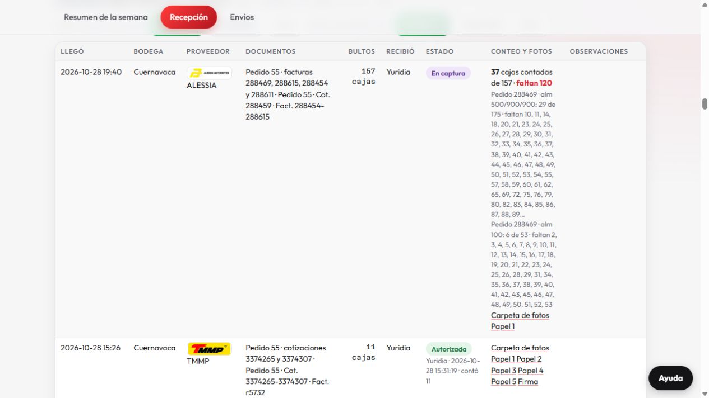
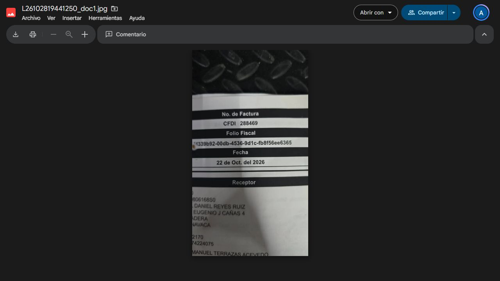

PanelReparto aprobado · 29 octubre
Cuernavaca y Estado de México · 1,710 unidades ML adicionales. Incluye las 19 piezas confirmadas de MRM253837. Conserva el envío248 completo y las cantidades y etiquetas originales.
Alcance
Alessia288615 permanece en camino, sin asignar. KINGMOTO EDOMEX sigue excluido hasta cotejar el conteo de Jessica. Los futuros son apartados previstos, no citas de Mercado Libre. Las fechas lejanas requieren revalidación de ventas antes de preparar. No se modificó Mercado Libre ni se importó a Motofix.
Porcentaje por documento, incluidos apartados futuros
Unidades documentales con factores por paquete/individual; no equivalen necesariamente a unidades ML. MRM incluye 816 documentales ya asignadas y 19 nuevas.
Archivos conservados y carga pendiente
La carga de facturas FXMOTO-DOC-1 queda pendiente de preparación/importación en Motofix. El CSV de envíos contiene las adiciones aprobadas por Código ML; no confirma citas de Mercado Libre.
Una partida documental retenida, KINGMOTO MZ-1108A-RS, sigue sin imagen específica de color confirmada; no se asignó a ningún envío. Todos los renglones añadidos a envíos tienen imagen.
Dónde se mencionó Alessia288615
Captura histórica del28-oct, durante la captura del almacén: el campo de documentos incluye288615. La foto adjunta muestra288469. Esta evidencia no confirma recepción de288615. Se conserva como en camino por instrucción de Ángel.

